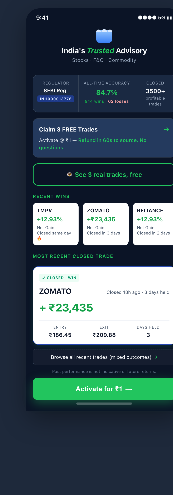

Per-segment reasoning — not aggregate hand-waving. Every claim is cited against the simulation evidence.
Skeptical Investor24% of audience · n=12
25%→35%
All five trust barriers removed in one design pass: blurred trade card → real closed trade with entry/exit/days/₹ disclosed; vague "instant refund" → explicit "Refund in 60s to source" SLA; missing wins/losses ratio → V1's "914 wins · 62 losses" transparency adopted (defeats cherry-picking structurally); "04:34 Left" countdown removed (41% of segment flagged as manipulation); CTA copy made coherent with the actual 3-trade offer. Source quote (12/12 = 100% segment): "Show me a real trade or don't" — V5 answers literally.
Curious Beginner30% of audience · n=15
33%→41%
V1's named-stock carousel (TMPV +12.93%, ZOMATO +₹23,435, RELIANCE) restored. "I bought it last year — if they nailed that, I should listen" anchor mechanism. 71% of V1 users cited a stock by name; V2-V4 dropped this and lost the segment's primary anchor.
Bargain Hunter26% of audience · n=13
69%→69%
V4's strongest elements preserved at full strength: high-contrast green sticky CTA (+16pt for this segment in clean V2→V3 contrast), dual-CTA self-segmentation that contributed to V4's 44% lift, "free" framing in outline copy, ~7-second decision flow protected. Risk: countdown-timer removal could cost 1-2pt; real_closed_trade adds reading time. Net: ~flat at the natural ceiling.
Trust Seeker20% of audience · n=10
50%→60%
V1 was Trust Seeker's best variant at 60%. V5 restores V1's full trust stack (named wins + wins/losses transparency + SEBI prominence) while keeping V4's dark theme that already muted the green-CTA premium-feel penalty. Premium upgrades likely overcome any residual penalty.
02 The design
Renderable mockup (375 × 1180px viewport). Engineer-ready spec at data/univest/v5-spec.md.

Dark theme · Crown header · SEBI badge with 914W·62L transparency · 3 FREE Trades banner · "Refund in 60s to source" SLA · Recent Wins carousel · Real ZOMATO closed trade · "Browse all" cherry-picking-defense link · Dual CTA: outline "See 3 real trades, free" + sticky "Activate for ₹1"
03 What changes from V4 (the diff)
Seven element changes. Of those: 1 fully untested, 4 concretizations or copy fixes, 2 observed-pattern adoptions from V1.
Dimension
V4
V5
Why
Type
trade_evidence
blurred_card
real_closed_trade
Removes 100% of Skeptical's persistent friction (12/12 segment flagged as gimmick).
untested
wins_losses_disclosure
no
yes (914W · 62L)
Adopt V1's structural defense against cherry-picking. Backs the 84.7% accuracy claim with the full denominator.
v1 observed
evidence_detail
aggregate_metric
aggregate_plus_named
Restore V1's named-stock carousel (TMPV/ZOMATO/RELIANCE). 71% of V1 users cited a stock by name.
v1 observed
refund_or_guarantee_copy
"instant refund"
"Refund in 60s to source. No questions."
Concretizes vague existing copy. 64% cite refund as strongest reassurance.
concretize
urgency_mechanism
countdown_timer "04:34 Left"
none (removed)
Skeptical-only friction with no demonstrated cross-segment lift. V5 is first to remove.
removal
cta_primary_label
"Unlock FREE trade"
"See 3 real trades, free"
Match the actual offer count (banner says 3); resolves V4's 33%-noticed mismatch.
Two ranges, two purposes. The Wilson envelope [22%, 74%] is the honest small-sample reality at n=10–15 per segment — what's mathematically possible given the simulation's sample size. The mechanism-derived band [45%, 56%] is the practical decision-grade range — what V5 will produce if the synthesis is correct. Wilson is wider because n=10 baselines are wide; mechanism is narrower because the synthesis adds structure.
05 Operational preconditions
V5 is design-complete. Two operational commitments must be signed off before ship. These are not design problems — they're commitments Univest must make.
Precondition 1 · Owner: Product + Engineering
"See 3 real trades, free" must actually deliver 3 free trades pre-payment
The outline CTA must route to a flow that shows 3 closed trades without any payment screen, KYC gate, or signup friction. If broken, the copy is deceptive — bigger trust violation than V4's mismatched-but-vague labels. Verifiable by integration test that taps the outline CTA and asserts no payment screen fires before 3 trades are shown. Instrumentation kill: v5_payment_required_before_trade fires at all → stop-ship immediately.
"Refund in 60s to source. No questions." must match operational reality per payment method
If UPI is 30s but card is 5 days, the SLA copy is fiction. Skeptical Investor's trust gap closes only if the SLA is real. Submit a refund-SLA matrix (observed p90 elapsed-time per payment method, last 30 days) before ship. If any method exceeds 60s, copy must change to weaker generic ("Refund issued same business day") or per-payment-method conditional. Instrumentation kill: v5_refund_issued.p90_elapsed_seconds > 60 for ≥ 1 week.
06 Kill conditions (post-ship)
Per-segment thresholds where V5 is judged failed and rolled back. Wired into instrumentation events.
Skeptical Investor
Conversion < 27% over 2 weeks → mechanisms not transferring. Browse-all-trades engagement < 5% → cherry-picking mitigation didn't reach users.
Curious Beginner
Conversion < 30% over 2 weeks → carousel anchor not landing. Named-stock recall in post-test < 10pt above pre-test → V1 mechanism doesn't transfer to current stocks.
Bargain Hunter
Conversion drops > 5pt vs V4 → restore countdown timer in V5.1 A/B. v5_sticky_cta_clicked.time_to_convert_seconds p50 > 10s → cognitive load too high.
Trust Seeker
Conversion < 47% over 2 weeks → premium upgrades didn't compensate for green CTA penalty. Switch to muted dark-teal sticky CTA (mockup pre-rendered as v5b-muted-premium.png).
07 Caveats & methodology
Source simulation persona definitions are abstract archetypes, not voice-of-customer-grounded. The 5 segments are simulation constructs. If Univest can hand over real user-research data (app-store reviews, churn surveys, support tickets), confidence intervals tighten retroactively.
Sample size is the binding constraint. n=10–15 per segment in the source simulation. Future simulations should target n ≥ 30 per segment to narrow the Wilson bands.
Simulator-LLM calibration is itself a source of uncertainty. Per Seshadri et al. 2026 (Lost in Simulation, arxiv:2601.17087), LLM-simulated user evaluations vary by up to 9pt across simulator LLMs and systematically under-estimate hard segments while over-estimating medium ones. The wide low-tier and the kill-switch architecture are structural responses to this. Apriori does not disclose its simulator LLM; provenance flagged as unknown.
Three Apriori-side facts were corrected against actual variant screenshots. The original source-page prose is prescriptive (highlights variant differences) not descriptive (omits shared elements). v2 of this report rebuilds from data/univest/source-screenshots/ as the immutable ground truth.